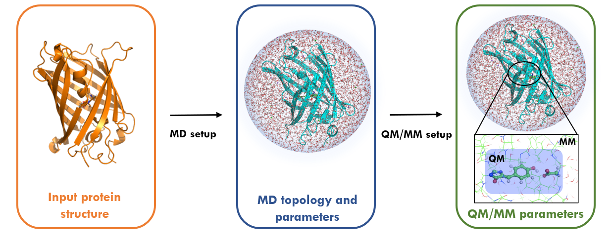
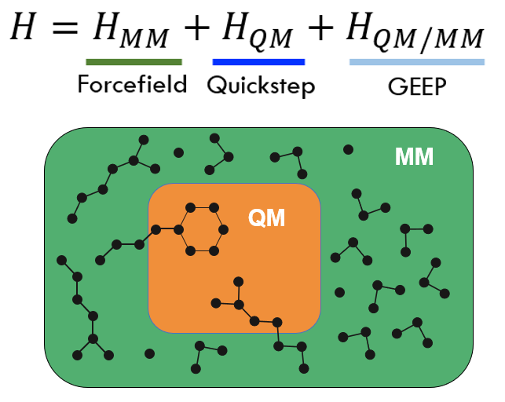

Hybrid Quantum-Classical simulations (QM/MM) with CP2K interface¶

Simulations of chemical reactions pathways can provide an atomistic insight into many biological and chemical processes. To perform such kind of modelling in complex systems, that includes solvent and/or proteins Multi-scale Quantum Mechanics / Molecular Mechanics (QM/MM) approaches are often used. Here we introduce a whole new interface to perform QM/MM simulations in fully periodic systems using MDModule that couples GROMACS with CP2K quantum chemistry package. This enables hybrid simulations of systems in systems where chemical reactions occurs. The interface supports most of the simulations techniques available in GROMACS including energy minimization, classical MD and enhanced sampling methods such as umbrella sampling and accelerated weight histogram method.


Interactions between the QM and the MM subsystems are handled using the GEEP approach as described by Laino et al. This method of evaluating interactions between the QM and MM subsystems is a variant of the “electrostatic embedding” scheme. An important advantage of using the CP2K/GEEP combination is that it allows evaluation of forces for both QM-QM and QM-MM interactions, in the case of systems with periodic boundary conditions (PBC).
Other features of the GROMACS QM/MM interface includes:
Automatized topology conversion from classical MD to QM/MM: charges and bonds modifications, as well as link-atoms setup on the frontier.
Validated CP2K QM parameters setup for the biological systems.
Compatibility with the most simulation techniques, tools and third-party software for analysis available for GROMACS.
Supports highly parallelizable simulation methods, like umbrella sampling and AWH.
A description of the interface is available online in webinar format.
References
Laino T., Mohamed F., Laio A. and Parrinello M., “An Efficient Real Space Multigrid QM/MM Electrostatic Coupling” doi:10.1021/ct050123f
Kuhne T., Iannuzzi M., Del Ben M. and Hutter J. et al., “CP2K: An electronic structure and molecular dynamics software package - Quickstep: Efficient and accurate electronic structure calculations” doi:10.1063/5.0007045